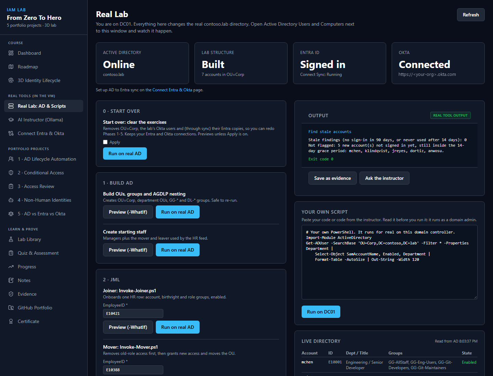
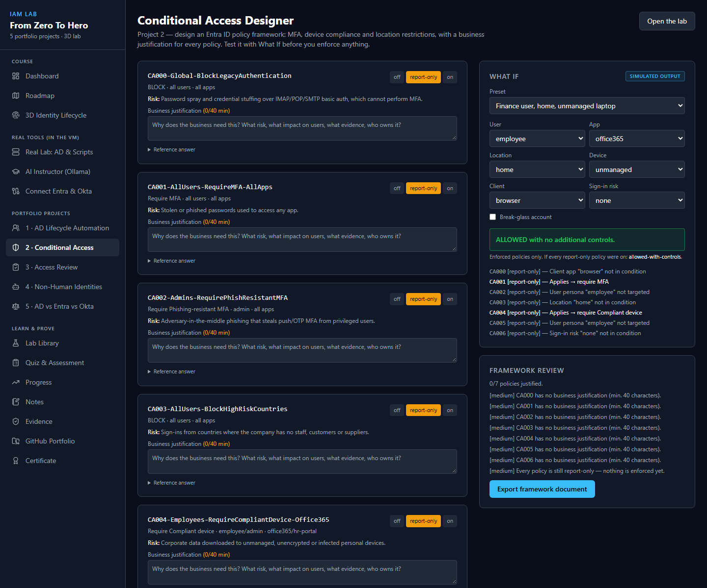

What this lab is
Most people trying to get into Identity & Access Management have read about it. Very few have done it. This lab gives you a computer of your own, with a real Active Directory domain on it, and walks you through the work an IAM analyst does in the first year: onboarding people, moving them, offboarding them, reviewing who has access to what, and writing it all down so an auditor would accept it.
You connect your own free Microsoft Entra ID tenant and your own Okta org, so the changes you make in Active Directory show up in the cloud, the way they do at real companies. A local AI instructor runs on the same computer and helps with PowerShell when you get stuck. Nothing leaves your machine unless you send it.
Syllabus
-
Foundations
Why identity became the perimeter, the vocabulary interviewers expect, and a tour of the lab.
-
Active Directory and automated lifecycle
Build the OU and group structure, then run real joiner, mover and leaver scripts from an HR feed.
You keep: the PowerShell, the run logs, the audit trail.
-
Conditional Access framework
Design MFA, device and location policies in Entra ID, with a business reason written for every one.
You keep: a policy framework document a manager could sign.
-
Access review and recertification
Find stale accounts, over-privileged users and role creep, and decide certify, modify or revoke.
You keep: an audit report with the reason for each decision.
-
Non-human identities
Service accounts, app registrations, API keys: who owns them, when they rotate, whether they are still needed.
You keep: an inventory and a remediation plan.
-
AD, Entra ID and Okta side by side
One person, three platforms: how each creates users, enforces MFA and handles a leaver.
You keep: a comparison and your recommendation.
What it looks like



Why it helps you get hired
Hiring managers for junior IAM roles ask the same handful of questions. They are not looking for definitions; they want to hear what you did and why. Every card below is a question you will be able to answer from your own lab, with your own screenshots. Click a card to see where you practise it.
Roles this prepares you for: IAM analyst, identity governance analyst, access management analyst, junior IAM engineer, Entra ID or Okta administrator.
Homework after the last phase
The lab is only half the job. The other half is making sure the right people can see it. Tick these off as you go; this page remembers them on your device.
Homework complete. Go apply.